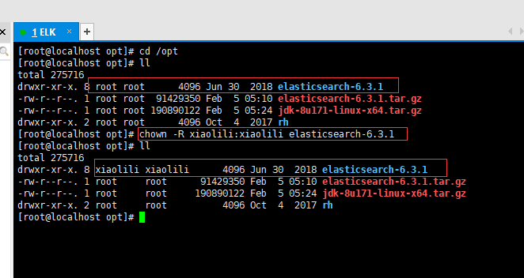
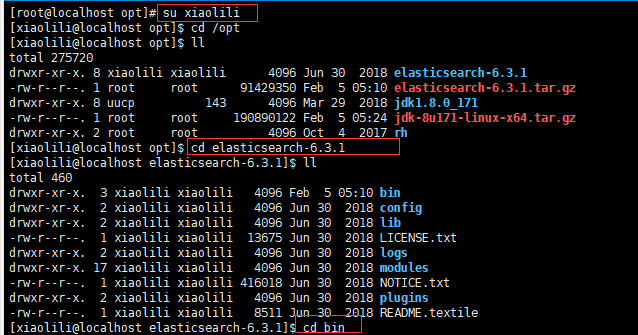
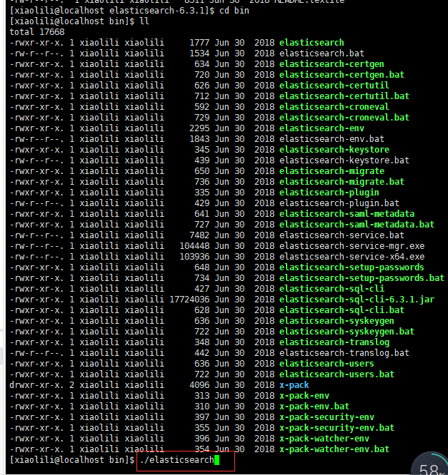

第一步：升级Linux内核版本
使用的ES的版本是6.3.1。ES6.x要求Linux内核必须是3.5+版本以上。在linux操作系统中，查看内核版本的命令是： uname -a
系统内核的提升，对已部署的应用一般没有影响，但是新版本内核，对线程的资源给与了更多的空间。如：低版本内核每个线程分配128K内存，高版本内核可能分配256K内存。
注册内核：rpm –import http://mirror.centos.org/centos/RPM-GPG-KEY-CentOS-7
下载内核安装包：rpm -Uvh http://www.elrepo.org/elrepo-release-6-8.el6.elrepo.noarch.rpm
安装内核新版本：yum --enablerepo=elrepo-kernel install kernel-lt -y
第二步：修改启动内核版本并重启系统
修改的是Linux系统的引导文件。
vim /etc/grub.conf
修改内容：default=1 改为 default=0
重启：reboot
第三步：修改打开文件限制
Linux默认来说，一般限制应用最多创建的文件是65535个。但是ES至少需要65536的文件创建权限。修改/etc/security/limits.conf的内容为：
* soft nofile 65536
* hard nofile 65536
第四步：修改线程开启限制
默认的Linux限制root用户开启的进程可以开启任意数量的线程，其他用户开启的进程可以开启1024个线程。必须修改限制数为4096+。因为ES至少需要4096的线程池预备。ES在5.x版本之后，强制要求在linux中不能使用root用户启动ES进程。所以必须使用其他用户启动ES进程才可以。
修改/etc/security/limits.d/90-nproc.conf文件：
* soft nproc 4096
root soft nproc unlimited
注意：Linux低版本内核为线程分配的内存是128K。4.x版本的内核分配的内存更大。如果虚拟机的内存是1G，最多只能开启3000+个线程数。至少为虚拟机分配1.5G以上的内存。
第五步：修改系统控制权限
系统控制文件是管理系统中的各种资源控制的配置文件。ES需要开辟一个65536字节以上空间的虚拟内存。Linux默认不允许任何用户和应用直接开辟虚拟内存。
修改/etc/sysctl.conf文件添加以下内容：
vm.max_map_count=655360
使用命令： sysctl -p 让系统控制权限配置生效。
第六步：安装Elasticsearch
上传Elasticsearch压缩包并解压缩：tar -zxvf elasticsearch-6.3.1.tar.gz
第七步：修改Elasticsearch所在的用户和用户组
因为Elasticsearch不允许以root用户启动，所以需要修改Elasticsearch所在的用户和用户组

第八步：切换es所在用户并启动es（bin目录下的）

